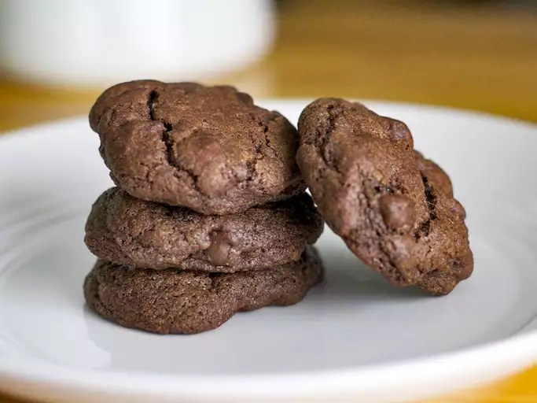

CHOCOLATE CHIP COOKIES
Double Chocolate Chip Cookies

This double chocolate chip cookie recipe is an altered version of a recipe from an old cookbook that took 10 years for me to perfect! I have been told to sell these cookies, they are very, very, very, very good!
Prep Time
15 mins
Cook Time:
10 mins
Total Time:
25 mins
Servings:
40
Yield:
40 cookies
Ingredients
- 1 cup margarine, softened
- 1 cup white sugar
- 1 cup brown sugar
- 2 eggs
- 1 teaspoon vanilla extract
- 2 cups all-purpose flour
- 1 teaspoon baking soda
- 1 teaspoon salt
- 1/3 cup unsweetened cocoa powder
- 3 cups semisweet chocolate chips
Step by Step
- Preheat the oven to 375 degrees F (190 degrees C). Grease cookie sheets.
- Mix together margarine,white sugar, & brown sugar until smooth.
- Beat in the eggs one at a time, then stir in the vanilla.
- Sift in the flour, baking soda, salt, and cocoa powder; mix well.
- Stir in the chocolate chips.
- Bake for 8 to 10 minutes in the preheated oven
- Allow cookies to cool on baking sheet for 2 minutes before removing to a wire rack to cool completely.
- Roll several tablespoonfuls of cookie dough into balls and place them 1 inch apart onto the prepared cookie sheets